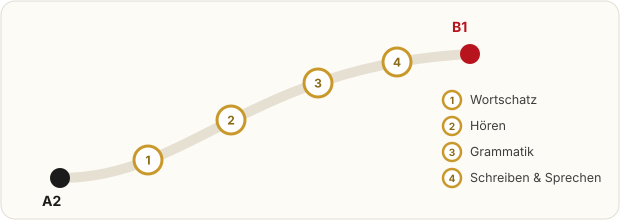

开放的德语学习站 · A2 → B1
A2 到 B1，不该一个人硬扛
这里的东西谁都能拿去用：703 个高频词、一份每天 60 分钟的周计划、A2 升 B1 必须补的 8 个语法点。觉得缺什么、哪里写错了，你也可以直接补上来。
先把话说清楚：本站没有后端。「登录」、学习进度、你投稿的词和建议，都只保存在你自己这台电脑的浏览器里（localStorage），不会上传到服务器。所以它是「大家整理好的内容 + 你自己的学习空间」，不是社交网站。

今天先做这三件事
站里已经有的东西
今日 5 词
点卡片翻面看例句；学会了点一下，进度记在本机。
我的进度：已学会 0 / 0 个词
还没留名字也没关系，进度照样记。
你也可以往这里加东西
看到缺的词、想吐槽的设计、觉得该补的语法点，都可以写在下面。
怎么参与
- 先用 —— 词表、索引、周计划，不用注册也不用问，直接抄。
- 再补 —— 你课本上有、这里没有的词，投稿上来；错的也告诉我。
- 最后传 —— 这套东西管用的话，把网址丢给同班同学，让他们少走一段弯路。
图也能看清
点任意一张放大看（纯 HTML + CSS + 一点 JS，不用插件）。